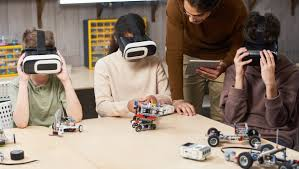

El desarrollo de aplicaciones de Realidad Aumentada (RA) representa un desafío multidisciplinario que combina visión computacional, diseño de interacción y desarrollo de software. A diferencia del desarrollo tradicional de aplicaciones, la RA requiere considerar aspectos únicos como el tracking ambiental, la integración de objetos virtuales y la interacción espacial. Este ensayo analiza las características fundamentales del desarrollo de RA, examinando sus componentes técnicos, metodologías de trabajo, herramientas clave y los desafíos particulares que enfrentan los desarrolladores en este campo emergente.


• Ley de Persección: Los objetos virtuales deben obedecer las leyes físicas
• Occlusión adecuada: Los objetos reales deben tapar correctamente los virtuales
• Sombras consistentes: Coherencia en la iluminación entre ambos mundos


• Consumo energético: Equilibrio entre precisión y duración de batería
• Calibración precisa: Variabilidad en condiciones de iluminación
• Latencia crítica: Máximo aceptable de 16ms por frame